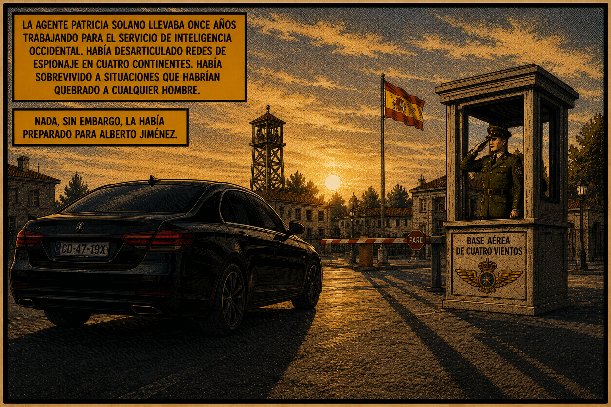
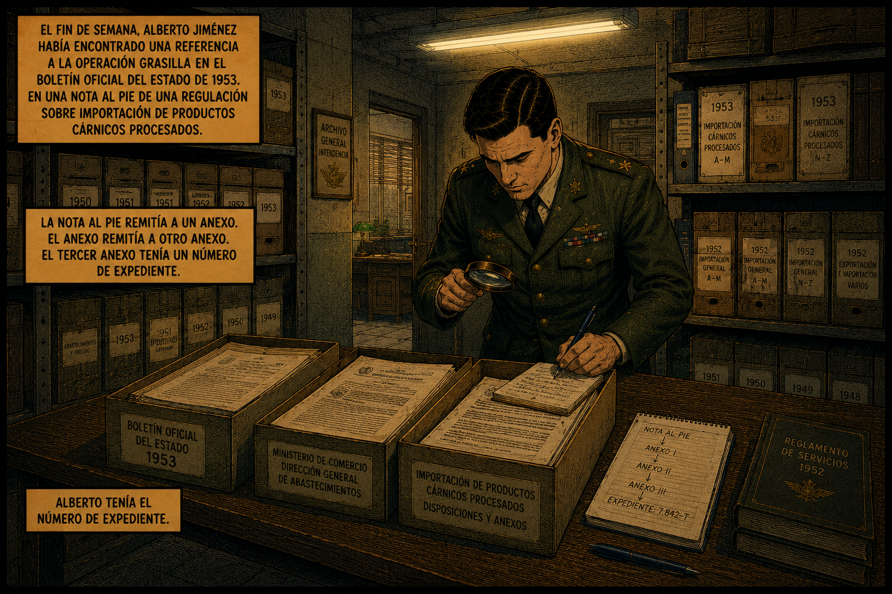
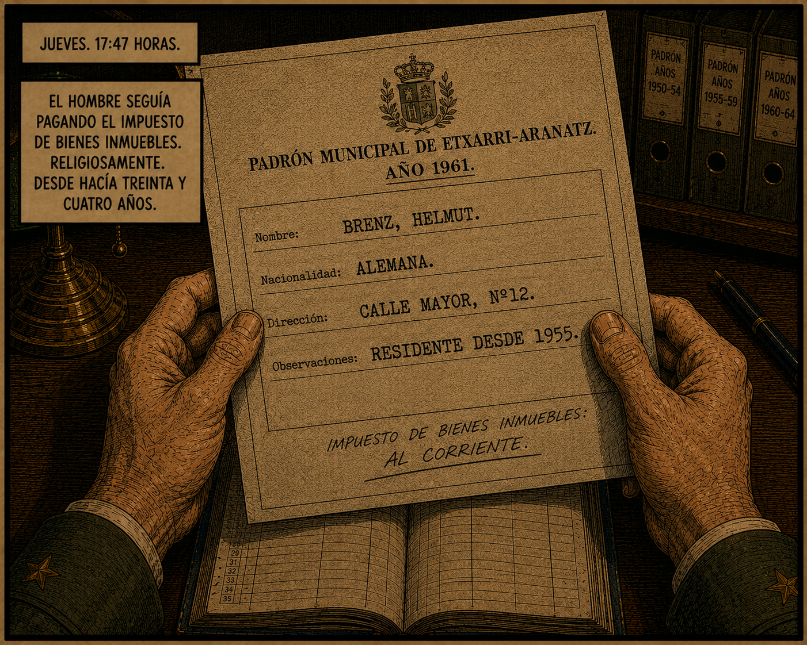
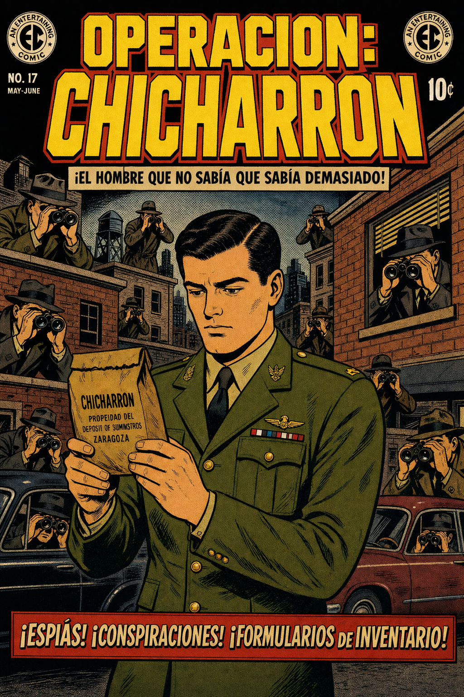
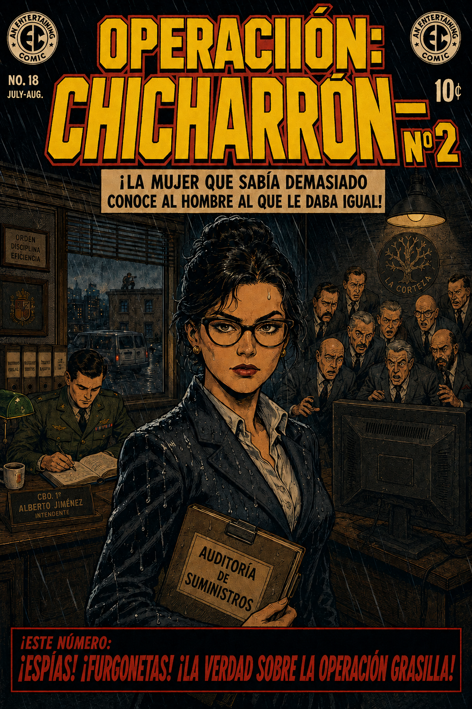
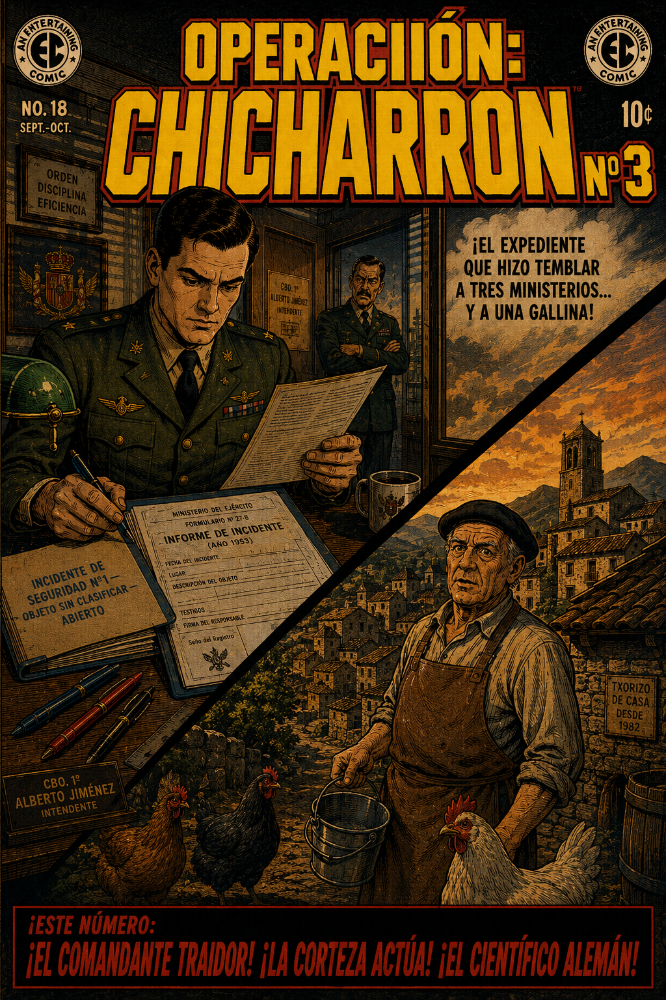

NO. 17
MAY-JUNE
An Entertaining
Comic
10c
PRESENTAMOS...
OPERACION:
CHICHARRON
!ESPIAS! !CONSPIRACIONES! !FORMULARIOS DE INVENTARIO!
Una historia de espionaje burocratico en el Madrid de 1953
ENTRAR
!ESTE NUMERO: !EL COMANDANTE TRAIDOR! !LA CORTEZA ACTUA! !EL CIENTIFICO ALEMAN!